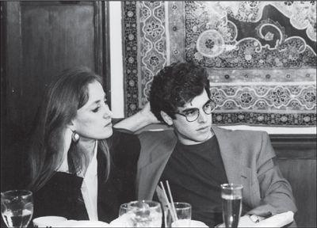

Mona Simpson and her fiancé, Richard Appel, 1991
In 1982, when he was still working on the Macintosh, Jobs met the famed folksinger Joan Baez through her sister Mimi Fari?a, who headed a charity that was trying to get donations of computers for prisons. A few weeks later he and Baez had lunch in Cupertino. “I wasn’t expecting a lot, but she was really smart and funny,” he recalled. At the time, he was nearing the end of his relationship with Barbara Jasinski. They had vacationed in Hawaii, shared a house in the Santa Cruz mountains, and even gone to one of Baez’s concerts together. As his relationship with Jasinski flamed out, Jobs began getting more serious with Baez. He was twenty-seven and Baez was forty-one, but for a few years they had a romance. “It turned into a serious relationship between two accidental friends who became lovers,” Jobs recalled in a somewhat wistful tone.
1982年乔布斯还在开发麦金塔时，通过一个为监狱募捐电脑的慈善基金负责人米米·法里纳（MimiFarina）认识了她姐姐——著名的民谣歌手琼·贝兹。几星期后，他和贝兹在库比蒂诺共进午餐。“我本来并没期望太髙，结果她却那么机智风趣。”他回忆道。当时，他和芭芭拉·亚辛斯基的恋情正接近尾声。亚辛斯基是个有着波利尼西亚和波兰血统的美女，曾为里吉斯·麦肯纳工作。他们曾经一起去夏威夷度假，一起在圣克鲁兹山生活，甚至一起去过贝兹的演唱会。当乔布斯与亚辛斯基激情退去，他对贝兹日渐认真起来。他当时27岁而贝兹41岁，但他们的恋情持续了几年时间。“两个人偶然相遇，从朋友发展为情人，认真地谈了一场恋爱。”乔布斯不无伤感地回忆道。
Elizabeth Holmes, Jobs’s friend from Reed College, believed that one of the reasons he went out with Baez—other than the fact that she was beautiful and funny and talented—was that she had once been the lover of Bob Dylan. “Steve loved that connection to Dylan,” she later said. Baez and Dylan had been lovers in the early 1960s, and they toured as friends after that, including with the Rolling Thunder Revue in 1975. (Jobs had the bootlegs of those concerts.)
伊丽莎白·霍姆斯是乔布斯在里德学院时的好朋友，她认为乔布斯跟贝兹交往的原因之一——除了她美丽风趣、天生丽质之外——是她曾经是鲍勃·迪伦的情人。“史蒂夫喜欢这种与迪伦的关联。”她后来说。贝兹和迪伦在20世纪60年代初曾经相恋，后来他们作为朋友一起巡演，包括1975年的滚雷巡演（RollingThunderRevue）。（乔布斯还有这些演唱会上非法录制的唱片。）
When she met Jobs, Baez had a fourteen-year-old son, Gabriel, from her marriage to the antiwar activist David Harris. At lunch she told Jobs she was trying to teach Gabe how to type. “You mean on a typewriter?” Jobs asked. When she said yes, he replied, “But a typewriter is antiquated.”
结识乔布斯时，贝兹已经有了一个14岁的儿子加布里埃尔，是她与前夫反战活动家戴维·哈里斯（DavidHarris）所生。午餐中，她告诉乔布斯她正在教加布如何打字。“你是说在打字机上打字？”乔布斯问。她说是，他跟着说：“可是打字机都老掉牙了。”
“If a typewriter is antiquated, what does that make me?” she asked. There was an awkward pause. As Baez later told me, “As soon as I said it, I realized the answer was so obvious. The question just hung in the air. I was just horrified.”
“打字机老掉牙了，那么我呢？”她问道。一阵尷尬的沉默。贝兹后来告诉我：“当我说出那句话时，就意识到答案是那么显而易见。这个问题就那样悬在空中。我感到恐惧。”
Much to the astonishment of the Macintosh team, Jobs burst into the office one day with Baez and showed her the prototype of the Macintosh. They were dumbfounded that he would reveal the computer to an outsider, given his obsession with secrecy, but they were even more blown away to be in the presence of Joan Baez. He gave Gabe an Apple II, and he later gave Baez a Macintosh. On visits Jobs would show off the features he liked. “He was sweet and patient, but he was so advanced in his knowledge that he had trouble teaching me,” she recalled.
令麦金塔团队大吃一惊的是，有一天乔布斯带着贝兹冲进办公室，向她展示麦金塔的样机。他对保密问题是那么在意，却会把这台计算机曝光给一个局外人，这令他们目瞪口呆，但更令他们意外的是这个人居然是琼·贝兹。他送给力口布一台AppleII电脑，后来又送给贝兹一台麦金塔。乔布斯会去贝兹家显摆他喜欢的那些特色功能。“他很和善很耐心，但他的知识太高深了，要教会我不太容易。”她回忆说。
He was a sudden multimillionaire; she was a world-famous celebrity, but sweetly down-to-earth and not all that wealthy. She didn’t know what to make of him then, and still found him puzzling when she talked about him almost thirty years later. At one dinner early in their relationship, Jobs started talking about Ralph Lauren and his Polo Shop, which she admitted she had never visited. “There’s a beautiful red dress there that would be perfect for you,” he said, and then drove her to the store in the Stanford Mall. Baez recalled, “I said to myself, far out, terrific, I’m with one of the world’s richest men and he wants me to have this beautiful dress.” When they got to the store, Jobs bought a handful of shirts for himself and showed her the red dress. “You ought to buy it,” he said. She was a little surprised, and told him she couldn’t really afford it. He said nothing, and they left. “Wouldn’t you think if someone had talked like that the whole evening, that they were going to get it for you?” she asked me, seeming genuinely puzzled about the incident. “The mystery of the red dress is in your hands. I felt a bit strange about it.” He would give her computers, but not a dress, and when he brought her flowers he made sure to say they were left over from an event in the office. “He was both romantic and afraid to be romantic,” she said.
他是突然暴富的千万富翁，她是个世界名人但活得脚踏实地，也没那么有钱。那时她看不懂他，30年之后再谈起他时，她仍然觉得他让人迷惑不解。在他们恋爱初期一次晚餐时，乔布斯谈起拉尔夫·劳伦（RalphLauren）和他的马球服装店，她承认她从未去过。“那儿有一件漂亮的红裙子，会非常适合你。”他说，然后开车带她直奔斯坦福购物中心（StanfordMall）里的专卖店。贝兹回忆：“我对自己说，这简直太棒了，我跟着世界上最有钱的男人，他想让我拥有一条漂亮的裙子。”到了专卖店，乔布斯给自己买了一大堆衬衫，让她看那条红裙子，说她穿上会棒极了。她赞同。“你应该买下它。”他说。她有一点点惊讶，告诉他她买不起。他没说什么，然后他们就离开了。“难道你不觉得，如果一个人像那样说了一整晚，就一定是去给你买的吗？”她问我，看起来对这件事真的很迷惑不解。“红裙子的秘密交给你来解读吧。我是觉得有一点儿奇怪。”他会送给她计算机，却不送裙子；当他送花给她时，一定会说那是办公室里什么活动剩下的。“他既浪漫，又害怕浪漫。”她说。
When he was working on the NeXT computer, he went to Baez’s house in Woodside to show her how well it could produce music. “He had it play a Brahms quartet, and he told me eventually computers would sound better than humans playing it, even get the innuendo and the cadences better,” Baez recalled. She was revolted by the idea. “He was working himself up into a fervor of delight while I was shrinking into a rage and thinking, How could you defile music like that?”
在NeXT计算机的开发阶段，乔布斯到贝兹在伍德赛德的家，向她展示NeXT强大的音乐功能。“他让它演奏了一曲勃拉姆斯的四重奏，然后告诉我，电脑最终会比人演奏得更好听，甚至连意境和节奏都会更好。”贝兹回忆说，她非常排斥这种想法，“他越说越兴奋，我却越听越偾怒，我在想：你怎么能这么亵渎音乐？”
Jobs would confide in Debi Coleman and Joanna Hoffman about his relationship with Baez and worry about whether he could marry someone who had a teenage son and was probably past the point of wanting to have more children. “At times he would belittle her as being an ‘issues’ singer and not a true ‘political’ singer like Dylan,” said Hoffman. “She was a strong woman, and he wanted to show he was in control. Plus, he always said he wanted to have a family, and with her he knew that he wouldn’t.”
乔布斯会跟黛比·科尔曼和乔安娜·霍夫曼吐露他跟贝兹的关系，他对是否可以跟她结婚这个问题有些烦心：她已经有了个十几岁的儿子，可能巳经过了想再要更多孩子的阶段。“有时候他会说她只是个事件歌手，不是像迪伦那样真正的‘政治’歌手。”霍夫曼说，“她是个个性很强的女人，而他想表现出是他在控制局面。再加上，他总是说他想生儿育女，他知道跟她是不会有的。”
And so, after about three years, they ended their romance and drifted into becoming just friends. “I thought I was in love with her, but I really just liked her a lot,” he later said. “We weren’t destined to be together. I wanted kids, and she didn’t want any more.” In her 1989 memoir, Baez wrote about her breakup with her husband and why she never remarried: “I belonged alone, which is how I have been since then, with occasional interruptions that are mostly picnics.” She did add a nice acknowledgment at the end of the book to “Steve Jobs for forcing me to use a word processor by putting one in my kitchen.”
就这样，过了大约3年，他们终止了恋情，慢慢变成了朋友。“我以为我爱她，但其实我只是非常喜欢她，”他后来说，“我们是注定无法在一起的。我想要孩子，她不想再要了。”贝兹在1989年的回忆录中，谈到了她跟丈夫的分手，以及为什么她没有再婚：“我属于自己，所以从那时起我就一直一个人，偶尔有些小插曲，也大多像是野餐而已。”在该书结尾的致谢辞中，她写了这样一段温馨的话：“感谢史蒂夫·乔布斯，为了迫使我使用文字处理器，硬是在我家厨房里放了一台。”
When Jobs was thirty-one, a year after his ouster from Apple, his mother Clara, who was a smoker, was stricken with lung cancer. He spent time by her deathbed, talking to her in ways he had rarely done in the past and asking some questions he had refrained from raising before. “When you and Dad got married, were you a virgin?” he asked. It was hard for her to talk, but she forced a smile. That’s when she told him that she had been married before, to a man who never made it back from the war. She also filled in some of the details of how she and Paul Jobs had come to adopt him.
乔布斯的母亲克拉拉是一个吸烟者。他31岁时，也就是在他离开苹果公司一年之后，母亲患上了肺癌。在她弥留之际，他陪在她的病床边，用以往少有的方式跟她聊天，问了一些一直压在心底的问题。“跟爸爸结婚的时候，你是处女吗？”他问道。她虽然难以启齿，却还是努力地给了他一个微笑。她这才告诉他，之前她结过婚，她的前夫上了战场就再没回来。她还透露了一些她和保罗·乔布斯如何领养他的细节。
Soon after that, Jobs succeeded in tracking down the woman who had put him up for adoption. His quiet quest to find her had begun in the early 1980s, when he hired a detective who had failed to come up with anything. Then Jobs noticed the name of a San Francisco doctor on his birth certificate. “He was in the phone book, so I gave him a call,” Jobs recalled. The doctor was no help. He claimed that his records had been destroyed in a fire. That was not true. In fact, right after Jobs called, the doctor wrote a letter, sealed it in an envelope, and wrote on it, “To be delivered to Steve Jobs on my death.” When he died a short time later, his widow sent the letter to Jobs. In it, the doctor explained that his mother had been an unmarried graduate student from Wisconsin named Joanne Schieble.
大概就是在那个时候，乔布斯找到了他生母的下落。从20世纪80年代初开始，他就聘用了一个侦探，开始悄悄地寻找他的生母，但什么线索都没有找到。后来乔布斯注意到他出生证上一个旧金山医生的名字。“他的姓名在电话簿上可以查到，所以我给他打了个电话。”乔布斯回忆说。那个医生没帮上忙。他声称他的记录在一场火灾中全部烧毁了。不过那不是真的。事实上，就在接到乔布斯的电话后，这个医生写了一封信，装在信封里封好，上面写着“我死后交给史蒂夫·乔布斯”。不久后他就去世了，他的遗孀把这封信寄给了乔布斯。信中，医生说他的母亲是来自威斯康星州一个未婚的研究生，名字叫乔安妮·席贝尔。
It took another few weeks and the work of another detective to track her down. After giving him up, Joanne had married his biological father, Abdulfattah “John” Jandali, and they had another child, Mona. Jandali abandoned them five years later, and Joanne married a colorful ice-skating instructor, George Simpson. That marriage didn’t last long either, and in 1970 she began a meandering journey that took her and Mona (both of them now using the last name Simpson) to Los Angeles.
乔布斯聘请了另一位侦探，几个月后找到了她的下落。在把乔布斯送人后，乔安妮还是嫁给了乔布斯的生父阿卜杜勒法塔赫·约翰·钱德里，他们后来又生了一个孩子，叫莫娜。钱德里5年后拋弃了她们，乔安妮又嫁给了一个滑冰教练乔治·辛普森（GeorgeSimpson）。那场婚姻也没能长久，1970年她开始帯着莫娜四处流浪（她们俩现在都用的是辛普森的姓），后来到了洛杉矶。
Jobs had been reluctant to let Paul and Clara, whom he considered his real parents, know about his search for his birth mother. With a sensitivity that was unusual for him, and which showed the deep affection he felt for his parents, he worried that they might be offended. So he never contacted Joanne Simpson until after Clara Jobs died in early 1986. “I never wanted them to feel like I didn’t consider them my parents, because they were totally my parents,” he recalled. “I loved them so much that I never wanted them to know of my search, and I even had reporters keep it quiet when any of them found out.” When Clara died, he decided to tell Paul Jobs, who was perfectly comfortable and said he didn’t mind at all if Steve made contact with his biological mother.
乔布斯一直犹豫要不要让保罗和克拉拉——他心目中“真正的”父母——知道他在寻找自己的生母。他担心他们不髙兴，这种敏感对他来说实属少见，从中也可以看出他对养父母的感情之深。所以直到1986年初克拉拉·乔布斯去世，他才与乔安妮·辛普森取得联系。“我绝不希望让他们感觉我不把他们当成父母，因为他们彻头彻尾就是我的父母，”他回忆说，“我是那么爱他们，因此我不想让他们知道我在寻找生母，甚至当有记者发现真相时我也会让那些人守口如瓶。”克拉拉去世后，他决定告诉保罗·乔布斯。他父亲觉得完全可以接受，并说不介意史蒂夫跟他的生母取得联系。
So one day Jobs called Joanne Simpson, said who he was, and arranged to come down to Los Angeles to meet her. He later claimed it was mainly out of curiosity. “I believe in environment more than heredity in determining your traits, but still you have to wonder a little about your biological roots,” he said. He also wanted to reassure Joanne that what she had done was all right. “I wanted to meet my biological mother mostly to see if she was okay and to thank her, because I’m glad I didn’t end up as an abortion. She was twenty-three and she went through a lot to have me.”
这样，史蒂夫某天给乔安妮·辛普森打了电话，说了自己是谁，并安排去洛杉矶跟她见面。后来他说这主要是出于好奇心：“我相信环境比遗传对你的影响更大，但你还是会对你的血缘有点儿好奇。”他还想安慰乔安妮她当初把他送给别人领养是没问题的。“我想见我的生母，主要是为了看看她过得好不好，我还要感谢她，因为我很髙兴我没有被堕胎。她当时23岁，为了把我生下来她承受了很多。”
Joanne was overcome with emotion when Jobs arrived at her Los Angeles house. She knew he was famous and rich, but she wasn’t exactly sure why. She immediately began to pour out her emotions. She had been pressured to sign the papers putting him up for adoption, she said, and did so only when told that he was happy in the house of his new parents. She had always missed him and suffered about what she had done. She apologized over and over, even as Jobs kept reassuring her that he understood, and that things had turned out just fine.
当乔布斯来到她在洛杉矶的家时，乔安妮激动不已。她知道他很出名很富有，但她不太清楚是因为什么。她的感情顿时奔涌而出。她说她当时承受了很大压力才在他的领养文件上签字，而且她是在被告知他会在新的父母家非常幸福才签字的。她一直很想念他，并为她所做的事情感到痛苦。她反反复复地道歉，即使乔布斯一直安慰她说他能够理解，而且事情的结果还好。
Once she calmed down, she told Jobs that he had a full sister, Mona Simpson, who was then an aspiring novelist in Manhattan. She had never told Mona that she had a brother, and that day she broke the news, or at least part of it, by telephone. “You have a brother, and he’s wonderful, and he’s famous, and I’m going to bring him to New York so you can meet him,” she said. Mona was in the throes of finishing a novel about her mother and their peregrination from Wisconsin to Los Angeles, Anywhere but Here. Those who’ve read it will not be surprised that Joanne was somewhat quirky in the way she imparted to Mona the news about her brother. She refused to say who he was—only that he had been poor, had gotten rich, was good-looking and famous, had long dark hair, and lived in California. Mona then worked at the Paris Review, George Plimpton’s literary journal housed on the ground floor of his townhouse near Manhattan’s East River. She and her coworkers began a guessing game on who her brother might be. John Travolta? That was one of the favorite guesses. Other actors were also hot prospects. At one point someone did toss out a guess that “maybe it’s one of those guys who started Apple computer,” but no one could recall their names.
平静下来后，她告诉乔布斯他有个同父同母的亲妹妹，莫娜·辛普森，现在在曼哈顿，是个雄心勃勃的小说家。以前她从未告诉过莫娜她有个哥哥，就在那天她打电话公布了这个消息——或至少是一部分信息。“你有个哥哥，他很棒，很有名，我要带他来纽约见你。”她说。莫娜当时正在写一部小说的结尾，是关于她母亲以及她们如何从威斯康星州游历到洛杉矶的经历，书名叫《在别处》。读过这本书的人不会惊讶，乔安妮向莫娜说起自己长子的方式有点儿怪异。她不肯说他是谁，只是说他曾经很穷，现在有钱了，很好看也很有名，有长长的深色头发，住在加利福尼亚。莫娜当时在《巴黎评论》（TheParisReview）工作，那是乔治·普林顿（GeorgePlimpton）主办的文学期刊，办公室在他位于曼哈顿东河附近别墅的一层。莫娜和同事们开始猜她哥哥是谁。约翰·特拉沃尔塔（JohnTravolta）?那是大家认为最可能的一个键底。他们还猜到了其他演员。其间某个人说了句“也许是苹果公司那几个创始人之一呢”，但是没人想得起他们的名字。
The meeting occurred in the lobby of the St. Regis Hotel. “He was totally straightforward and lovely, just a normal and sweet guy,” Mona recalled. They all sat and talked for a few minutes, then he took his sister for a long walk, just the two of them. Jobs was thrilled to find that he had a sibling who was so similar to him. They were both intense in their artistry, observant of their surroundings, and sensitive yet strong-willed. When they went to dinner together, they noticed the same architectural details and talked about them excitedly afterward. “My sister’s a writer!” he exulted to colleagues at Apple when he found out.
他们的会面安排在瑞吉酒店（St.RegisHotel）的大堂。乔安妮·辛普森把莫娜介绍给乔布斯，结果居然真的是苹果的创始人。“他非常直率可爱，就是个普通的、和善的人。”莫娜回忆道。他们一起坐在大堂聊了一会儿，然后他带着妹妹一起出去散步，就他们两个人。乔布斯兴奋地发现有个跟自己这么像的亲妹妹。他们都对自己的艺术非常执著，对周围环境善于观察，敏感而又倔犟。当他们共进晚餐时，他们会注意到相同的建筑细节或有趣的事物，之后会兴奋地谈论。“我妹妹是个作家！”他喜形于色地告诉苹果的同事们。
When Plimpton threw a party for Anywhere but Here in late 1986, Jobs flew to New York to accompany Mona to it. They grew increasingly close, though their friendship had the complexities that might be expected, considering who they were and how they had come together. “Mona was not completely thrilled at first to have me in her life and have her mother so emotionally affectionate toward me,” he later said. “As we got to know each other, we became really good friends, and she is my family. I don’t know what I’d do without her. I can’t imagine a better sister. My adopted sister, Patty, and I were never close.” Mona likewise developed a deep affection for him, and at times could be very protective, although she would later write an edgy novel about him, A Regular Guy, that described his quirks with discomforting accuracy.
1986年底，普林顿为《在别处》举行庆祝会时，乔布斯专程飞到纽约陪同莫娜出席。他们的关系越来越亲密，尽管当中也有磕磕绊绊，这也在所难免——想想他们都那么有个性，又是在这样的情况下才得以团聚。“一开始莫娜对我的出现并不是很兴奋，尤其她妈妈在感情上又对我那么投入，”乔布斯后来说，“但随着我们渐渐相互了解，我们就成了很好的朋友，而且她是我的亲人。我不知道没有她我该怎么办。我难以想象会有比她更好的妹妹。我那个同样是领养的妹妹帕蒂跟我从不亲密。”莫娜同样对他的感情也越来越深，有时还会非常护着他，虽然她后来写了本关于他的小说《凡人》（ARegularGuy）其中描述了他的各种怪癖，让人看了很不舒服，但很准确。
One of the few things they would argue about was her clothes. She dressed like a struggling novelist, and he would berate her for not wearing clothes that were “fetching enough.” At one point his comments so annoyed her that she wrote him a letter: “I am a young writer, and this is my life, and I’m not trying to be a model anyway.” He didn’t answer. But shortly after, a box arrived from the store of Issey Miyake, the Japanese fashion designer whose stark and technology-influenced style made him one of Jobs’s favorites. “He’d gone shopping for me,” she later said, “and he’d picked out great things, exactly my size, in flattering colors.” There was one pantsuit that he had particularly liked, and the shipment included three of them, all identical. “I still remember those first suits I sent Mona,” he said. “They were linen pants and tops in a pale grayish green that looked beautiful with her reddish hair.”
会引起他们争论的事情之一，就是她的着装。莫娜穿得像一个生活困顿的小说家，而他会怪她衣着不够迷人。有一次他的评论实在惹恼了她，她给他写信说：“我是个年轻的作家，这是我的生活，我没想当模特。”他没有回信。但没过多久，从三宅一生的时装店寄来一箱衣服，这位设计师因其筒洁风格和科技元素而成为乔布斯的最爱之一。“他会去为我买衣服，”她后来说，“他能选出非常棒的，正好是我的尺码，颜色也很适合我。”有一套裤装他特别喜欢，包裹里居然有三套完全一样的。“我还记得我寄给莫娜的第一箱衣服，”乔布斯说，“是些淡灰绿色的亚麻裤子和上装，很衬她的红头发。”
In the meantime, Mona Simpson had been trying to track down their father, who had wandered off when she was five. Through Ken Auletta and Nick Pileggi, prominent Manhattan writers, she was introduced to a retired New York cop who had formed his own detective agency. “I paid him what little money I had,” Simpson recalled, but the search was unsuccessful. Then she met another private eye in California, who was able to find an address for Abdulfattah Jandali in Sacramento through a Department of Motor Vehicles search. Simpson told her brother and flew out from New York to see the man who was apparently their father.
当时，莫娜·辛普森一直在努力寻找他们的父亲，他在她五岁的时候就离开了。通过曼哈顿两位知名作家肯·奥莱塔和尼克·派勒吉（NickPileggi），她结识了一位退休后开侦探所的前纽约警察。“我把当时仅有的一点儿钱都给他了。”辛普森回忆说，可是并没有找到她父亲。后来她在加利福尼亚遇到另一位私家侦探，通过机动车管理局捜索到了阿卜杜勒法塔赫·钱德里在萨克拉门托的一个地址。辛普森通知了哥哥，然后从纽约飞过去找他，显然，那是她的父亲。
Jobs had no interest in meeting him. “He didn’t treat me well,” he later explained. “I don’t hold anything against him—I’m happy to be alive. But what bothers me most is that he didn’t treat Mona well. He abandoned her.” Jobs himself had abandoned his own illegitimate daughter, Lisa, and now was trying to restore their relationship, but that complexity did not soften his feelings toward Jandali. Simpson went to Sacramento alone.
乔布斯对见他丝毫不感兴趣。“他没有善待我，”他后来解释，“我并不是对他有意见——我很高兴我活下来了。最让我不满的是他对莫娜不好。他拋弃了她。”乔布斯自己也抛弃了私生女丽萨，当时还正在试图恢复父女之间的关系，但这并没有减轻他对钱德里的反感。辛普森一个人去了萨克拉门托。
“It was very intense,” Simpson recalled. She found her father working in a small restaurant. He seemed happy to see her, yet oddly passive about the entire situation. They talked for a few hours, and he recounted that, after he left Wisconsin, he had drifted away from teaching and gotten into the restaurant business.
“当时非常紧张。”辛普森回忆道。她发现父亲在一家小餐馆工作。他见到她似乎很高兴，但是对整个局面都表现得很被动。他们聊了几个小时，他讲述了离开威斯康星之后，他如何从教书转到了餐饮生意。他的第二次婚姻很短暂，之后又跟一个有钱的年长些的女人有过一段长一些的婚姻，但再没有过孩子。
Jobs had asked Simpson not to mention him, so she didn’t. But at one point her father casually remarked that he and her mother had had another baby, a boy, before she had been born. “What happened to him?” she asked. He replied, “We’ll never see that baby again. That baby’s gone.” Simpson recoiled but said nothing.
乔布斯之前告诉辛普森不要提起他，所以她只字未提。但是她父亲不经意地提到，在她之前，他和她母亲还曾经有过一个男孩。“他怎么样了？”她问。他答道：“我们再也没见过那个孩子。他不在了。”辛普森犹豫了一下，没说什么。
An even more astonishing revelation occurred when Jandali was describing the previous restaurants that he had run. There had been some nice ones, he insisted, fancier than the Sacramento joint they were then sitting in. He told her, somewhat emotionally, that he wished she could have seen him when he was managing a Mediterranean restaurant north of San Jose. “That was a wonderful place,” he said. “All of the successful technology people used to come there. Even Steve Jobs.” Simpson was stunned. “Oh, yeah, he used to come in, and he was a sweet guy, and a big tipper,” her father added. Mona was able to refrain from blurting out, Steve Jobs is your son!
接下来还有更惊人的。钱德里描述他曾经经营过的餐馆，强调说曾经有些很不错，比现在萨克拉门托的这个要漂亮。他有点儿激动地说，真希望她能看到他在圣何塞北部经营的那个地中海餐厅。“那个地方真棒，”他说，“所有科技界的成功人士都会去那儿，甚至包括史蒂夫·乔布斯。”辛普森惊呆了。“是真的，他来过，而且他很友善，小费给得很多。”她爸爸接着说。莫娜强忍着没有脱口而出，史蒂夫·乔布斯是你儿子！
When the visit was over, she called Jobs surreptitiously from the pay phone at the restaurant and arranged to meet him at the Espresso Roma café in Berkeley. Adding to the personal and family drama, he brought along Lisa, now in grade school, who lived with her mother, Chrisann. When they all arrived at the café, it was close to 10 p.m., and Simpson poured forth the tale. Jobs was understandably astonished when she mentioned the restaurant near San Jose. He could recall being there and even meeting the man who was his biological father. “It was amazing,” he later said of the revelation. “I had been to that restaurant a few times, and I remember meeting the owner. He was Syrian. Balding. We shook hands.”
跟父亲告别后，她偷偷用餐馆的付费电话打给她哥哥，安排在伯克利的罗马咖啡厅（ExpressoRoma）见面。像是述嫌这个家庭的故事不够丰富多彩，他届然把丽萨也带来了。丽萨已经上小学了，跟她妈妈克里斯安生活在一起。他们到咖啡厅时，已经快晚上10点了，辛普森把故事一股脑儿地讲了出来。当她提到圣何塞附近那家餐厅时，可想而知乔布斯大吃一惊。他还记得去过那儿甚至还见到了他的生父。“这真是神奇，”他后来谈道，“我去过那家餐厅几次，而且我记得见到了老板。他是叙利亚人。我们还握过手。”
Nevertheless Jobs still had no desire to see him. “I was a wealthy man by then, and I didn’t trust him not to try to blackmail me or go to the press about it,” he recalled. “I asked Mona not to tell him about me.”
尽管如此，乔布斯还是不想见他。“那时我已经很富有了，我不敢肯定他会不会来敲诈我或是去跟媒体说什么，”他回忆道，“我让莫娜别跟他谈起我。”
She never did, but years later Jandali saw his relationship to Jobs mentioned online. (A blogger noticed that Simpson had listed Jandali as her father in a reference book and figured out he must be Jobs’s father as well.) By then Jandali was married for a fourth time and working as a food and beverage manager at the Boomtown Resort and Casino just west of Reno, Nevada. When he brought his new wife, Roscille, to visit Simpson in 2006, he raised the topic. “What is this thing about Steve Jobs?” he asked. She confirmed the story, but added that she thought Jobs had no interest in meeting him. Jandali seemed to accept that. “My father is thoughtful and a beautiful storyteller, but he is very, very passive,” Simpson said. “He never contacted Steve.”
莫娜·辛普森从没提过，但是多年以后钱德里在网上看到有人谈到他和乔布斯的关系。（一个博客注意到，辛普森在一本书里把钱德里列为她父亲，据此猜到他一定也是乔布斯的父亲。）当时钱德里已经第四次结婚，在内华达州雷诺市西部的布姆顿俱乐部酒店（BoomtownResortandCasino）担任餐饮经理。2006年，他带着新任太太罗希利去看望辛普森时，提起了这个话题。“史蒂夫·乔布斯是怎么回事？”他问道。她证实了这个传闻，但补充说她觉得乔布斯没有兴趣见他。钱德里看似接受了这一切。“我的父亲很能体谅人，他讲起故事来是把好手，但他也是个特别特别被动的人，”辛普森说，“他再也没提起这件事。他也从未联络过史蒂夫。”
Simpson turned her search for Jandali into a basis for her second novel, The Lost Father, published in 1992. (Jobs convinced Paul Rand, the designer who did the NeXT logo, to design the cover, but according to Simpson, “It was God-awful and we never used it.”) She also tracked down various members of the Jandali family, in Homs and in America, and in 2011 was writing a novel about her Syrian roots. The Syrian ambassador in Washington threw a dinner for her that included a cousin and his wife who then lived in Florida and had flown up for the occasion.
辛普森用她寻找钱德里的故事作为第二本小说的蓝本，名为《失散的父亲》（TheLostFather），1992年出版。（乔布斯说服NeXT标识的设计师保罗·兰德为这本书设计封面，可是按照辛普森的说法，“简直糟透了，我们根本没用它。”）她还找到了在美国和在叙利亚霍姆斯的多名钱德里家族成员的下落，并于2011年开始写一部关于她叙利亚家族起源的小说。驻华盛顿的叙利亚大使为她举行了一次晚宴，她住在佛罗里达的表兄夫妇也专程飞来参加。
Simpson assumed that Jobs would eventually meet Jandali, but as time went on he showed even less interest. In 2010, when Jobs and his son, Reed, went to a birthday dinner for Simpson at her Los Angeles house, Reed spent some time looking at pictures of his biological grandfather, but Jobs ignored them. Nor did he seem to care about his Syrian heritage. When the Middle East would come up in conversation, the topic did not engage him or evoke his typical strong opinions, even after Syria was swept up in the 2011 Arab Spring uprisings. “I don’t think anybody really knows what we should be doing over there,” he said when I asked whether the Obama administration should be intervening more in Egypt, Libya, and Syria. “You’re fucked if you do and you’re fucked if you don’t.”
辛普森以为乔布斯迟早会去见钱德里，但是随着时间的推移，他却越发对此不感兴趣。2010年，乔布斯和儿子里德来辛普森在洛杉矶的家里参加她的生日晚宴，里德还花了些时间看他亲生祖父的照片，但是乔布斯却视而不见。他似乎也不在乎自己的叙利亚血统。每当中东问题在谈话中出现，这个话题好像他既不感兴趣也不会如往常一样提出很鲜明的看法，即使叙利亚在2011年阿拉伯之春运动中受到波及，他的态度也没什么两样。当我问他，奧巴马政府是否应该在埃及、利比亚和叙利亚进行更多千预时，他说，“我觉得没有人真正知道我们到底该在那里做些什么，你干预也是完蛋，不干预也是完蛋。”
Jobs did retain a friendly relationship with his biological mother, Joanne Simpson. Over the years she and Mona would often spend Christmas at Jobs’s house. The visits could be sweet, but also emotionally draining. Joanne would sometimes break into tears, say how much she had loved him, and apologize for giving him up. It turned out all right, Jobs would reassure her. As he told her one Christmas, “Don’t worry. I had a great childhood. I turned out okay.”
另一方面，乔布斯跟他的生母乔安妮·辛普森却保持着友好的关系。多年来，她和莫娜常常飞过来，在乔布斯家过圣诞节。那些时刻很温馨，但也很耗感情。乔安妮常常会流泪，反复诉说她是多么爱他，很抱歉当初放弃他。乔布斯会安慰她说没关系。有一个圣诞节他曾跟她说，“别担心，我的童年很棒。我好好地长大了。”
Lisa Brennan, however, did not have a great childhood. When she was young, her father almost never came to see her. “I didn’t want to be a father, so I wasn’t,” Jobs later said, with only a touch of remorse in his voice. Yet occasionally he felt the tug. One day, when Lisa was three, Jobs was driving near the house he had bought for her and Chrisann, and he decided to stop. Lisa didn’t know who he was. He sat on the doorstep, not venturing inside, and talked to Chrisann. The scene was repeated once or twice a year. Jobs would come by unannounced, talk a little bit about Lisa’s school options or other issues, then drive off in his Mercedes.
丽萨·布伦南（LisaBrennan）的童年就没有那么棒了。她小时候，父亲几乎从不来看她。“我不希望做父亲，所以我就不做。”乔布斯后来说，语气中只有一点点自责。然而有时候他也能感觉到这种牵挂。丽萨3岁时的一天，乔布斯开车路过他给她和克里斯安买的房子时，决定停下来看一看。丽萨还不知道他是谁。他坐在门前的台阶上跟克里斯安聊天，没敢进屋去。这样的场景每年会出现一两次。乔布斯会突然跑来，简单讨论一下丽萨要上的学校或其他事情，然后就开着他的奔驰车离开。
But by the time Lisa turned eight, in 1986, the visits were occurring more frequently. Jobs was no longer immersed in the grueling push to create the Macintosh or in the subsequent power struggles with Sculley. He was at NeXT, which was calmer, friendlier, and headquartered in Palo Alto, near where Chrisann and Lisa lived. In addition, by the time she was in third grade, it was clear that Lisa was a smart and artistic kid, who had already been singled out by her teachers for her writing ability. She was spunky and high-spirited and had a little of her father’s defiant attitude. She also looked a bit like him, with arched eyebrows and a faintly Middle Eastern angularity. One day, to the surprise of his colleagues, he brought her by the office. As she turned cartwheels in the corridor, she squealed, “Look at me!”
但到了丽萨8岁的时候，也就是1986年，他来得更加频繁。他已经从开发麦金塔的巨大压力和后来跟斯卡利的权力之争中解脱出来。他当时在NeXT，环境更为平静友善，公司总部在帕洛奥图，离克里斯安和丽萨的住处很近。再加上，到了三四年级就可以看出，丽萨是个聪明又有艺术天赋的孩子，她的写作能力已经得到老师的特别关注了。她充满勇气，活力十足，还有一点儿她爸爸的叛逆气质。她看起来也有点儿像他，弯弯的眉毛，略带中东味道的棱角。有一天，出乎同事们的意料，他把她带到了办公室。她在走廊里侧手翻，还尖叫着，“快看我呀！”
Avie Tevanian, a lanky and gregarious engineer at NeXT who had become Jobs’s friend, remembers that every now and then, when they were going out to dinner, they would stop by Chrisann’s house to pick up Lisa. “He was very sweet to her,” Tevanian recalled. “He was a vegetarian, and so was Chrisann, but she wasn’t. He was fine with that. He suggested she order chicken, and she did.”
阿维·泰瓦尼安（AvieTevanian）是NeXT的一名工程师，瘦髙个儿，爱交际，后来成了乔布斯的朋友。他回忆说，时不时地，他们一起出去吃饭时，就会在克里斯安家停一下，接上丽萨。“他对她特别和蔼，”泰瓦尼安回忆说，“他是素食者，克里斯安也是，但丽萨不是。他对此也没意见。他建议她点鸡肉，她就照做。”
Eating chicken became her little indulgence as she shuttled between two parents who were vegetarians with a spiritual regard for natural foods. “We bought our groceries—our puntarella, quinoa, celeriac, carob-covered nuts—in yeasty-smelling stores where the women didn’t dye their hair,” she later wrote about her time with her mother. “But we sometimes tasted foreign treats. A few times we bought a hot, seasoned chicken from a gourmet shop with rows and rows of chickens turning on spits, and ate it in the car from the foil-lined paper bag with our fingers.” Her father, whose dietary fixations came in fanatic waves, was more fastidious about what he ate. She watched him spit out a mouthful of soup one day after learning that it contained butter. After loosening up a bit while at Apple, he was back to being a strict vegan. Even at a young age Lisa began to realize his diet obsessions reflected a life philosophy, one in which asceticism and minimalism could heighten subsequent sensations. “He believed that great harvests came from arid sources, pleasure from restraint,” she noted. “He knew the equations that most people didn’t know: Things led to their opposites.”
吃鸡肉成了丽萨在父母之间穿梭时的一个小小放纵，她的父母都是素食者，而且对自然食品都有精神崇拜。“我们去那些满是酵母味的商店买菜，买菊苣、藜麦、块根芹、外面包裹角豆粉的坚果。那些地方的女人都不染头发的。”她后来写道，“但我们有时候会吃外国大餐。有几次我们去一个美食店买热气腾腾的烤鸡，一卷一卷的鸡肉在烤叉上转着，烤鸡装在衬着锡箔的纸袋里，我们就坐在车里用手拿着吃。”她父亲对饮食习惯有着近乎狂热的执著，对自己吃什么更是吹毛求疵。有天她亲眼目睹了他知道汤里有黄油之后，把一大口汤吐了出来。在苹果的一段时间，他在饮食方面的要求有所放松，后来就又成了一个严格的素食者。还在很小的年纪，丽萨就开始意识到他的饮食癖好反映了一种人生哲学：苦行和极简将会让人更加敏锐。“他相信匮乏即是富足，自律产生喜悦，”她说，“他知道一个大多数人不知道的道理：物极必反。”
In a similar way, the absence and coldness of her father made his occasional moments of warmth so much more intensely gratifying. “I didn’t live with him, but he would stop by our house some days, a deity among us for a few tingling moments or hours,” she recalled. Lisa soon became interesting enough that he would take walks with her. He would also go rollerblading with her on the quiet streets of old Palo Alto, often stopping at the houses of Joanna Hoffman and Andy Hertzfeld. The first time he brought her around to see Hoffman, he just knocked on the door and announced, “This is Lisa.” Hoffman knew right away. “It was obvious she was his daughter,” she told me. “Nobody has that jaw. It’s a signature jaw.” Hoffman, who suffered from not knowing her own divorced father until she was ten, encouraged Jobs to be a better father. He followed her advice, and later thanked her for it.
同理，父亲的疏离和冷漠也使得他偶尔的慈爱愈发显得可贵。“我不跟他一起生活，但他有时候会来我家，就像神那样在我们中间待上一会儿或几小时。”她回忆道。丽萨很快就变得很有趣了，他会跟她一起散步。他也会跟她一起在帕洛奥图老城安静的街道上滑轮滑，常常会在乔安娜·霍夫曼和安迪·赫茨菲尔德家停一下。他第一次带她去见霍夫曼时，就直接敲开门宣布，“这是丽萨。”霍夫曼顿时明白了。“很显然那是他女儿，”她告诉我，“没人会有那样的下巴。那是个标志性的下巴。”霍夫曼小时候因父母离异，直到10岁才知道父亲是谁，那是段痛苦的成长经历，因此她鼓励乔布斯努力做一个好父亲。乔布斯听从了她的建议，后来还为此而感激她。
Once he took Lisa on a business trip to Tokyo, and they stayed at the sleek and businesslike Okura Hotel. At the elegant downstairs sushi bar, Jobs ordered large trays of unagi sushi, a dish he loved so much that he allowed the warm cooked eel to pass muster as vegetarian. The pieces were coated with fine salt or a thin sweet sauce, and Lisa remembered later how they dissolved in her mouth. So, too, did the distance between them. As she later wrote, “It was the first time I’d felt, with him, so relaxed and content, over those trays of meat; the excess, the permission and warmth after the cold salads, meant a once inaccessible space had opened. He was less rigid with himself, even human under the great ceilings with the little chairs, with the meat, and me.”
有一次他出差去东京时带上了丽萨，他们住在时尚兼具商务风格的大仓酒店（OkuraHotel）。一楼有间雅致的寿司餐吧，乔布斯要了大盘大盘的鳗鱼寿司，他非常喜欢，甚至破了一下荤戒。寿司上包裹着精盐或薄薄的甜酱，丽萨还记得那种入口即化的感觉。他们父女之间的距离也随之融化了。后来她写道：“那是第一次，我跟他在一起，面对一盘盘的肉食，感觉那么放松和满足；冷沙拉后那种丰盛、纵容和温暧的感受，意味着曾经封闭的空间被打开了。他一个人时没那么严肃了，在那大大的屋顶下坐在小小的椅子上，跟那些肉食，跟我在一起，从神变成了人。”
But it was not always sweetness and light. Jobs was as mercurial with Lisa as he was with almost everyone, cycling between embrace and abandonment. On one visit he would be playful; on the next he would be cold; often he was not there at all. “She was always unsure of their relationship,” according to Hertzfeld. “I went to a birthday party of hers, and Steve was supposed to come, and he was very, very, late. She got extremely anxious and disappointed. But when he finally did come, she totally lit up.”
然而，事情并非总是那么甜蜜轻松。乔布斯对丽萨跟对其他几乎所有人一样善变。拥抱和冷落总是在循环上演。这次他可能玩得很高兴，下次他就可能很冷漠或根本不用心。“她对他们的关系总是不敢肯定赫茨菲尔德说，“有一次我去参加她的生曰会，史蒂夫该来的，可是他来得特别特别晚。丽萨极度焦虑和失望。但是他最终出现时，她一下子就好起来了。”
Lisa learned to be temperamental in return. Over the years their relationship would be a roller coaster, with each of the low points elongated by their shared stubbornness. After a falling-out, they could go for months not speaking to each other. Neither one was good at reaching out, apologizing, or making the effort to heal, even when he was wrestling with repeated health problems. One day in the fall of 2010 he was wistfully going through a box of old snapshots with me, and paused over one that showed him visiting Lisa when she was young. “I probably didn’t go over there enough,” he said. Since he had not spoken to her all that year, I asked if he might want to reach out to her with a call or email. He looked at me blankly for a moment, then went back to riffling through other old photographs.
反过来，丽萨也学会了耍脾气。这些年来，他们的关系就像是坐过山车，每次的低点都因他们共有的固执而延长。每次闹翻后，他们可以好几个月不讲话。两个人都不擅长主动道歉，或是作出和好的努力——即使是他在反复跟健康问题作斗争的时候也是如此。2010年秋季的一天，他伤感地跟我一起翻看一箱老照片，看到丽萨小时候他去看她时拍的一张照片。“也许我那时去看她的次数太少了。”他说。这一年他都还没有跟她说过话，我问他是否想给她打个电话或发个邮件。他茫然地盯着我看了一会儿，就低下头继续翻别的老照片去了。
When it came to women, Jobs could be deeply romantic. He tended to fall in love dramatically, share with friends every up and down of a relationship, and pine in public whenever he was away from his current girlfriend. In the summer of 1983 he went to a small dinner party in Silicon Valley with Joan Baez and sat next to an undergraduate at the University of Pennsylvania named Jennifer Egan, who was not quite sure who he was. By then he and Baez had realized that they weren’t destined to be forever young together, and Jobs found himself fascinated by Egan, who was working on a San Francisco weekly during her summer vacation. He tracked her down, gave her a call, and took her to Café Jacqueline, a little bistro near Telegraph Hill that specialized in vegetarian soufflés.
关于女人，乔布斯可以是非常浪漫的。他会戏剧性地坠入爱河，跟朋友们分享恋爱中的每一次起伏，也在分手后公开展现他的失落。1983年夏天，他跟琼·贝兹去硅谷参加一个小型的晚餐聚会，身边坐了一个宾夕法尼亚大学的本科生，名字叫珍妮弗·伊根（JenniferEgan），而那个女孩还不太清楚他是谁。当时乔布斯和贝兹已经意识到他们不会永远在一起永远年轻了，而乔布斯发现自己被伊根迷住了。伊根当时在旧金山一家周刊作暑期实习。他找到她，给她打电话，带她去杰奎琳咖啡厅（CaféJacqueline），那是电报山附近一家以素食舒芙蕾为特色的小餐馆。
They dated for a year, and Jobs often flew east to visit her. At a Boston Macworld event, he told a large gathering how much in love he was and thus needed to rush out to catch a plane for Philadelphia to see his girlfriend. The audience was enchanted. When he was visiting New York, she would take the train up to stay with him at the Carlyle or at Jay Chiat’s Upper East Side apartment, and they would eat at Café Luxembourg, visit (repeatedly) the apartment in the San Remo he was planning to remodel, and go to movies or (once at least) the opera.
他们约会了一年，乔布斯常常飞来东部看她。一次在波士顿的Macworld大会上，他告诉一大群观众自己是如何深陷爱河，必须搭航班赶去费城看望他的女朋友。观众也为之动容。他到纽约时，她也会坐火车赶去纽约，跟他住在卡莱尔酒店（Carlyle）或杰伊·恰特的上东区公寓，他们会在卢森堡咖啡厅（CaféLuxembourg）吃饭，并曾几次去看他在圣雷莫那套打算重新装修的公寓，还会去看电影甚至是歌剧。
He and Egan also spoke for hours on the phone many nights. One topic they wrestled with was his belief, which came from his Buddhist studies, that it was important to avoid attachment to material objects. Our consumer desires are unhealthy, he told her, and to attain enlightenment you need to develop a life of nonattachment and non-materialism. He even sent her a tape of Kobun Chino, his Zen teacher, lecturing about the problems caused by craving and obtaining things. Egan pushed back. Wasn’t he defying that philosophy, she asked, by making computers and other products that people coveted? “He was irritated by the dichotomy, and we had exuberant debates about it,” Egan recalled.
很多个夜晚，他和伊根会煲几个小时的电话粥。他们争执不休的话题之一是他源于佛教修行的一个信条：要避免对物质的执著。他告诉伊根，我们的消费欲望是不健康的，要过一种不执著、非物质的生活以达到觉醒。他甚至寄给她一盘他的师父乙川弘文的录像带，是讲由于对物质的执著追求引发的问题。伊根反驳说，他在制造电脑和其他让人们着迷的产品，这难道不是跟他推崇的哲学背道而驰吗？“他为这种矛盾而困扰，我们因此常常激烈地辩论。”伊根回忆说。
In the end Jobs’s pride in the objects he made overcame his sensibility that people should eschew being attached to such possessions. When the Macintosh came out in January 1984, Egan was staying at her mother’s apartment in San Francisco during her winter break from Penn. Her mother’s dinner guests were astonished one night when Steve Jobs—suddenly very famous—appeared at the door carrying a freshly boxed Macintosh and proceeded to Egan’s bedroom to set it up.
最后，乔布斯对自己产品的骄傲战胜了人们不该迷恋这种东西的想法。1984年1月，麦金塔问世时，伊根正住在她母亲在旧金山的公寓过寒假。一夜成名的史蒂夫·乔布斯有一天突然出现在门口，震惊了伊根母亲的晚餐客人。他搬了一台尚未拆箱的麦金塔，径直走到伊根的卧室去安装。
Jobs told Egan, as he had a few other friends, about his premonition that he would not live a long life. That was why he was driven and impatient, he confided. “He felt a sense of urgency about all he wanted to get done,” Egan later said. Their relationship tapered off by the fall of 1984, when Egan made it clear that she was still far too young to think of getting married.
如他告诉少数几个朋友的那样，乔布斯也告诉伊根，他预计自己不会很长寿。他说正因如此，他才会那么马不停蹄，那么缺乏耐心。“对他想要做成的事情，他觉得迫切需要尽快去做。”伊根后来说。到1984年秋季，他们的关系逐渐转淡，伊根明确表示她现在太年轻了，谈婚论嫁还为时过早。
Shortly after that, just as the turmoil with Sculley was beginning to build at Apple in early 1985, Jobs was heading to a meeting when he stopped at the office of a guy who was working with the Apple Foundation, which helped get computers to nonprofit organizations. Sitting in his office was a lithe, very blond woman who combined a hippie aura of natural purity with the solid sensibilities of a computer consultant. Her name was Tina Redse. “She was the most beautiful woman I’d ever seen,” Jobs recalled.
此后不久，即乔布斯跟斯卡利在苹果的矛盾于1985年初开始形成的时候，有一天他赶去开会，顺便去找一个跟苹果基金会合作、帮助非营利组织募捐电脑的人。那人的办公室里坐着一个柔美的金发女子，结合了自然纯净的嬉皮士气质和计算机咨询师的扎实敏锐。她的名字叫蒂娜·莱德斯，为人民电脑公司工作。“她是我见过的最美的女人。”乔布斯回忆说。
He called her the next day and asked her to dinner. She said no, that she was living with a boyfriend. A few days later he took her on a walk to a nearby park and again asked her out, and this time she told her boyfriend that she wanted to go. She was very honest and open. After dinner she started to cry because she knew her life was about to be disrupted. And it was. Within a few months she had moved into the unfurnished mansion in Woodside. “She was the first person I was truly in love with,” Jobs later said. “We had a very deep connection. I don’t know that anyone will ever understand me better than she did.”
几天后，他同她在附近的公园散步，再次约她出去，这次她告诉她男朋友，她想去了。她非常诚实坦率。晚饭后，她哭了起来，因为她知道她的人生就此会被打乱了。事实的确如此。没过几个月，她就搬进了乔布斯在伍德赛德那座没装修的大房子。“她是我真正爱的第一个人，”乔布斯后来说，“我们是那么心意相通。我不知道谁还能比她更理解我。”
Redse came from a troubled family, and Jobs shared with her his own pain about being put up for adoption. “We were both wounded from our childhood,” Redse recalled. “He said to me that we were misfits, which is why we belonged together.” They were physically passionate and prone to public displays of affection; their make-out sessions in the NeXT lobby are well remembered by employees. So too were their fights, which occurred at movie theaters and in front of visitors to Woodside. Yet he constantly praised her purity and naturalness. As the well-grounded Joanna Hoffman pointed out when discussing Jobs’s infatuation with the otherworldly Redse, “Steve had a tendency to look at vulnerabilities and neuroses and turn them into spiritual attributes.”
莱德斯来自一个问题家庭，乔布斯跟她分享自己被领养的痛苦。“我们都在童年受到伤害，”莱德斯回忆说，“他对说，我们都生错了地方，正因如此我们才属于对方。”他们充满激情，也喜欢公开表现他们的感情；他们在NeXT大堂亲热的场景，很多雇员都记忆犹新。他们吵架也同样公开，在电影院，在伍德赛德的访客面前，都曾发生过。然而他常常称赞她的纯洁和自然。他还赋予她各种各样的精神特质。我们后来讨论乔布斯对超凡脱俗的莱德斯的痴迷时，就像直言不讳的乔安娜·霍夫曼所说的那样，“乔布斯会把柔弱和多愁善感当做一种气质。”
When he was being eased out at Apple in 1985, Redse traveled with him in Europe, where he was salving his wounds. Standing on a bridge over the Seine one evening, they bandied about the idea, more romantic than serious, of just staying in France, maybe settling down, perhaps indefinitely. Redse was eager, but Jobs didn’t want to. He was burned but still ambitious. “I am a reflection of what I do,” he told her. She recalled their Paris moment in a poignant email she sent to him twenty-five years later, after they had gone their separate ways but retained their spiritual connection:
当乔布斯1985年被排挤出苹果时，莱德斯跟他去欧洲旅行，陪他在那里疗伤。某晚，在塞纳河的一座桥上，他们浪漫多于严肃地争论着一个想法：留在法国，也许永久地定居在那儿。莱德斯很渴望那样，但是乔布斯不想。他很受挫但依然野心勃勃。“我做的正是我想做的。”他告诉她。他们后来分开了，却一直保持着精神交流，25年之后，她在给他的一封令人心酸的邮件中追忆了在巴黎的那一幕。
We were on a bridge in Paris in the summer of 1985. It was overcast. We leaned against the smooth stone rail and stared at the green water rolling on below. Your world had cleaved and then it paused, waiting to rearrange itself around whatever you chose next. I wanted to run away from what had come before. I tried to convince you to begin a new life with me in Paris, to shed our former selves and let something else course through us. I wanted us to crawl through that black chasm of your broken world and emerge, anonymous and new, in simple lives where I could cook you simple dinners and we could be together every day, like children playing a sweet game with no purpose save the game itself. I like to think you considered it before you laughed and said “What could I do? I’ve made myself unemployable.” I like to think that in that moment’s hesitation before our bold futures reclaimed us, we lived that simple life together all the way into our peaceful old ages, with a brood of grandchildren around us on a farm in the south of France, quietly going about our days, warm and complete like loaves of fresh bread, our small world filled with the aroma of patience and familiarity.
1985年夏，我们在巴黎的一座桥上。阴天。我们倚在光滑的石栏上，看着绿色的水从桥下流过。你的世界破裂了，停滞了，等着你选择方向再重新安排。我想逃离过去遇到的一切。我试图说服你跟我一起在巴黎开始新的生活，抛下我们过去的自我，体验别样的人生。我希望我们可以穿越你那破碎的世界黑暗的深渊，走出来，隐姓埋名，重新开始，过简单的生活，我为你做晚餐，我们可以每天厮守，就像孩子玩一个美妙的游戏，没有任何目的，只为了游戏本身的快乐。我多希望你能先想一想再大笑着说，“我能干什么呢？我已经把自己槁得没人敢用了。”我多希望在我们被冷酷的未来俘虏之前，在那一刻的犹豫不决中，我们选择了一直过那种简单的生活直到我们平静的晚年，在法国南部的一个农场，儿孙铙膝，尽享天伦，日子像新鲜出炉的面包那么温暖充实，我们小小的世界里弥漫着耐心和熟悉的芳香。
The relationship lurched up and down for five years. Redse hated living in his sparsely furnished Woodside house. Jobs had hired a hip young couple, who had once worked at Chez Panisse, as housekeepers and vegetarian cooks, and they made her feel like an interloper. She would occasionally move out to an apartment of her own in Palo Alto, especially after one of her torrential arguments with Jobs. “Neglect is a form of abuse,” she once scrawled on the wall of the hallway to their bedroom. She was entranced by him, but she was also baffled by how uncaring he could be. She would later recall how incredibly painful it was to be in love with someone so self-centered. Caring deeply about someone who seemed incapable of caring was a particular kind of hell that she wouldn’t wish on anyone, she said.
这段恋情起起伏伏持续了5年。莱德斯讨厌住在他简陋的伍德赛德房子里。乔布斯聘请了一对曾在潘足斯之家餐厅（ChezPanisse）工作的时髦的年轻夫妇担任管家和素食厨师，而他们让她感觉自己像个外人。她有时会搬出来到她自己在帕洛奥图的公寓居住，尤其是在她跟乔布斯的一次大吵之后。她曾在通向他们卧室的走廊墙壁上写道：“忽视是一种虐待。”她为他着迷，可是也因为缺少他的关心而困扰。她后来回忆，爱上一个如此以自我为中心的人，那种痛苦令人难以置信。深深地关心一个似乎没有能力关心别人的人，那是某种地狱般的感觉，她不愿任何人去体验。
They were different in so many ways. “On the spectrum of cruel to kind, they are close to the opposite poles,” Hertzfeld later said. Redse’s kindness was manifest in ways large and small; she always gave money to street people, she volunteered to help those who (like her father) were afflicted with mental illness, and she took care to make Lisa and even Chrisann feel comfortable with her. More than anyone, she helped persuade Jobs to spend more time with Lisa. But she lacked Jobs’s ambition and drive. The ethereal quality that made her seem so spiritual to Jobs also made it hard for them to stay on the same wavelength. “Their relationship was incredibly tempestuous,” said Hertzfeld. “Because of both of their characters, they would have lots and lots of fights.”
他们的不同体现在很多方面。“在从残忍到仁慈的坐标轴上，他们分别接近相反的两极。”赫茨菲尔德后来说。莱德斯的仁慈体现在从大到小很多方面：她总是给街上的流浪汉钱，她做义工去帮助那些（像她爸爸一样）患精神疾病的人，她努力让丽萨甚至克里斯安跟她在一起都感觉很舒服。她比其他任何人都更多地说服乔布斯要多陪伴丽萨。但是她没有乔布斯那样的野心或进取心。这种让她在乔布斯眼里与众不同的不食人间烟火的特质，也使他们很难保持在同一频段上。“他们的关系充满了风暴，”赫茨菲尔德说，“由于他们的个性，他们会有很多很多争吵。”
They also had a basic philosophical difference about whether aesthetic tastes were fundamentally individual, as Redse believed, or universal and could be taught, as Jobs believed. She accused him of being too influenced by the Bauhaus movement. “Steve believed it was our job to teach people aesthetics, to teach people what they should like,” she recalled. “I don’t share that perspective. I believe when we listen deeply, both within ourselves and to each other, we are able to allow what’s innate and true to emerge.”
他们还有一个哲学层面的根本分歧，莱德斯认为审美品位是个人的事情，而乔布斯认为有一个理想的统一的美的标准，人们应该被教育。她说他受包豪斯运动的影响太大。“史蒂夫认为我们应该对大家进行美学教育，告诉人们他们应该喜欢什么，”她回忆说，“我不认同这种想法。我认为如果我们认真地倾听，无论对自己还是对其他人，就可以让我们内心深处真实的东西浮现出来。”
When they were together for a long stretch, things did not work out well. But when they were apart, Jobs would pine for her. Finally, in the summer of 1989, he asked her to marry him. She couldn’t do it. It would drive her crazy, she told friends. She had grown up in a volatile household, and her relationship with Jobs bore too many similarities to that environment. They were opposites who attracted, she said, but the combination was too combustible. “I could not have been a good wife to ‘Steve Jobs,’ the icon,” she later explained. “I would have sucked at it on many levels. In our personal interactions, I couldn’t abide his unkindness. I didn’t want to hurt him, yet I didn’t want to stand by and watch him hurt other people either. It was painful and exhausting.”
如果他们长时间在一起，就相处不好。但当他们分开后，乔布斯又会对她思念不已。最终，1989年的夏天，他向她求婚。而她无法接受。她告诉朋友，那会让她发疯的。她在一个不和睦的家庭长大，而她与乔布斯的关系却与之表现出太多的相似。他们是异质相吸，她说，但是这种组合太易燃了。“对于史蒂夫·乔布斯这样一个标志性人物，我不会是个好妻子，”她后来解释说，“我可能经常会搞砸。在我们相处时，我受不了他的不仁慈。我不想伤害他，但我也不想站在一边看着他伤害别人。那很痛苦，很累。”
After they broke up, Redse helped found OpenMind, a mental health resource network in California. She happened to read in a psychiatric manual about Narcissistic Personality Disorder and decided that Jobs perfectly met the criteria. “It fits so well and explained so much of what we had struggled with, that I realized expecting him to be nicer or less self-centered was like expecting a blind man to see,” she said. “It also explained some of the choices he’d made about his daughter Lisa at that time. I think the issue is empathy—the capacity for empathy is lacking.”
他们分手后，莱德斯帮助建立了OpoiMind网站，这是加利福尼亚一个精神健康资源网络。她碰巧读到了一本关于“自恋人格障碍”的精神病学手册，发现乔布斯完全符合其中的描述。“简直太符合了，充分解释了我们曾经面临的难题，这让我认识到，期待他更友善或别那么以自我为中心，就像期待一个盲人可以看见世界一样。”她说，“这也解释了当时他对他女儿丽萨的一些做法。我想问题出在怜悯心上——他缺失了怜悯的能力。”
Redse later married, had two children, and then divorced. Every now and then Jobs would openly pine for her, even after he was happily married. And when he began his battle with cancer, she got in touch again to give support. She became very emotional whenever she recalled their relationship. “Though our values clashed and made it impossible for us to have the relationship we once hoped for,” she told me, “the care and love I felt for him decades ago has continued.” Similarly, Jobs suddenly started to cry one afternoon as he sat in his living room reminiscing about her. “She was one of the purest people I’ve ever known,” he said, tears rolling down his cheeks. “There was something spiritual about her and spiritual about the connection we had.” He said he always regretted that they could not make it work, and he knew that she had such regrets as well. But it was not meant to be. On that they both agreed.
莱德斯后来结婚了，有了两个孩子，然后离婚了。一直以来，乔布斯都会时不时地公开表达对她的思念，即使是在他幸福地结婚之后。当他开始跟癌症斗争之后，她又跟他恢复了联络，给他支持。每当她回忆起他们的相恋，都会很动情。“虽然我们的价值观有冲突，让我们没办法像曾经希望的那样在一起，”她告诉我，“可我几十年前对他的关心和爱却一直持续下来。”同样，一个下午，乔布斯在他的起居室里回忆起她时，突然哭了起来。“她是我见过的最纯洁的人，”他说着，泪水从他的脸颊滚落，“她身上有种灵魂的力量，我们之间精神相通。”他说他一直很遗憾他们没能走下去，他知道她也同样感到遗憾。但这是命中注定的。他们两人对此亦有共识。